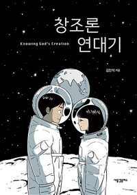

창조와 진화를 다룬 만화 한 권을 완독하고 모인 금요일 밤이었다. 이 주제를 가장 반겼을 이공계 멤버들이 하필 빠졌다는 아쉬움 섞인 농담으로 가볍게 열렸지만, 이야기는 곧 각자의 학창 시절 — 진화론 시험 문제 앞에서 위축되고 외로웠던 기억들로 깊어졌다. 전공자의 냉정한 분석과 진행자의 신학적 정리가 오가며 논의는 '이것은 과학 논쟁이 아니라 신앙의 영역이고, 사람을 바꾸는 것은 논증이 아니라 사랑'이라는 데로 모였다. 후반부에는 자녀 신앙 교육과 교회의 역할로 화제가 옮겨갔고, 다음 책으로 돈을 주제로 한 책을 정한 뒤 새 창조를 구하는 기도로 마무리됐다.
만화가 건드린 불편함 — "이 장면은 안 보여주고 싶다"
모임은 창조 과학이라는 주제 자체를 불편해해 참석을 망설였다는 한 멤버의 이야기로 열렸고, 그 모습이 오히려 만화 속 주인공과 닮았다며 웃음이 터졌다. 책에 대한 첫인상은 엇갈리면서도 진지했다. 한 참석자는 작가가 여러 참고 문헌을 딛고 이 만화를 그려냈다는 사실에 원작이 된 책들까지 궁금해졌다고 했다.
반면 아픈 장면들도 짚어졌다. 과학적 질문을 '믿음이 부족한 것'으로 몰아가며 기도해 주겠다는 장면, 과학을 좋아하던 아이가 아끼던 책을 쓰레기통에 버리는 장면은, 안 믿는 사람 눈에는 거의 학대처럼 보일 수 있고, 교회 안에서 자라는 아이들이 제대로 된 설명을 듣지 못한 채 좋아하는 것을 포기하게 되는 현실 같아 마음이 아팠다는 나눔이 이어졌다.
시험지 앞에서 — 각자의 학창 시절
한 어머니가 궁금증을 꺼냈다. 학창 시절 교회를 다닌 사람들은 시험에 진화론 문제가 나왔을 때 어떻게 했느냐는 것이다. 중학생 아들이 시험에 진화론 답을 적지 않겠다고 선언한 터라 절실한 질문이었다. 모태신앙 참석자들의 회고가 쏟아졌다. 청소년 수련회마다 창조 과학 특강이 몇 시간씩 들어가던 시절, 그 세미나를 듣고 오면 자신감이 차올랐지만 학교에서 논쟁이 붙으면 번번이 무너졌다는 것, 책상에 '개독교' 낙서가 등장하던 시대 분위기까지.
진행자는 자신은 시험에 답을 다 적었다고 웃으며, 중학생 시절 이 문제로 친구들과 부딪히다 전도가 도리어 막혔던 일, 창조와 진화를 어떻게든 다 붙들어 보려고 구원론까지 끌어들인 소년 시절의 궁리를 털어놓았다. 그만큼 이것이 정체성 전체가 걸린 절박한 문제였다는 고백이었다.
전공자의 눈 — 창조 과학은 어디에 서 있나
방사선 분야를 공부한 참석자가 동위원소 연대측정을 둘러싼 창조 과학의 주장과 과학계의 반박을 직접 찾아 비교해 본 이야기를 꺼냈다. 자기 전공의 눈으로는 결론이 분명했지만, 그는 비난 대신 '이분들은 왜 이런 주장을 계속할까'라는 질문으로 나아갔다 — 학자의 자존심일까, 신앙 배경에서 자란 이의 인지부조화일까 하는 안타까움이었다.
'우리 교회는 왜 창조 과학을 가르치나, 특정 교파에서 시작된 것 아닌가'라는 물음에는 진행자가 답했다. 보수 신학교 출신이 칼 바르트의 기도 문장 하나를 인용했다가 겪은 일화를 곁들이며, 기원 하나를 붙들어 전체를 규정하는 공격과 그에 맞선 선 긋기의 구도를 설명했고, 과학 자료로 성경을 떠받치는 방식이 안고 있는 구조적 위태로움을 짚었다.

문자주의의 뿌리, 그리고 '주의'의 유혹
논의는 역사로 거슬러 올라갔다. 한국 교회가 물려받은 것은 과학이 성경의 권위를 난도질하던 시대를 통과한 미국 교회의 상처였고, 문자적 해석은 그 홍역 속에서 성경을 붙들려던 몸부림이었다는 것이다. 진행자는 '상처받은 기독교인들'이라는 표현으로 창조 과학 진영을 향한 연민을 감추지 않으면서도, 하나를 열면 모든 것이 열린다는 두려움이 만들어 낸 진영 싸움의 구도를 담담히 그려 보였다.
반대편의 위험도 함께 짚어졌다. 데이터와 이론까지는 과학이지만 그것으로 세상 전부를 해석하는 순간 '주의'가 되며, 그 끝에는 적자생존의 피라미드와 우생학이 있다는 것. 한 참석자는 나치가 유대인 학살에 동원한 것이 우생학만이 아니라 제멋대로 해석한 성경이기도 했다며, 말씀 위에 바로 서 있지 않으면 어떤 재료로도 최악의 결과물이 나온다고 정리했다. 진행자는 미국 사역 시절 동성애 논쟁에서 성경 인용보다 한 생물학도의 논리에 청중이 움직이던 기억을 나누며, 성경의 권위가 무엇에 밀려나 있는지를 되물었다.
자녀에게 무엇을 물려줄 것인가
시험에 답을 안 적겠다는 아이에게 부모는 뭐라고 말해야 하나. 진행자는 그 용기를 칭찬해 주고 싶다면서도, 신앙의 표현은 다양하며 정작 어려운 결단은 시험지 한 칸이 아니라 삶의 방식에서 온다고 답했다. 이어 화제는 미국 대학 진학으로 화제가 된 한 기독교 대안학교로 옮겨갔다. 입학 설명회에 신앙에 대한 질문은 없고 대학 진학 질문만 쏟아졌다는 이야기에, 배변 훈련을 어린이집에 맡기듯 자녀의 신앙마저 위탁하려는 심리 아니냐는 뼈아픈 지적과, 졸업 후 유학 비용이라는 현실적 모순까지 여러 결의 이야기가 오갔다.
결국 대안은 거창하지 않았다. 가족들이 한 시간 동안 성경만 놓고 마주 앉아 대화하게 했던 실험, 서툰 캐치볼이라도 하루 한 번 자녀와 던지고 받으며 나누는 대화 — 아이가 무슨 생각을 하는지 뒤늦게 발견하지 않으려면 그 물리적 시간부터 확보해야 한다는 것이었다.
외로움에 대한 응답 — 서로에게 관심을
그 시절 느낀 외로움과 고립감의 뿌리가 무엇이었는지에 대한 고백에 모두가 고개를 끄덕였고, 이 만화가 지어낸 이야기가 아니라 겪은 사람의 기록이라는 데에 웃음과 씁쓸함이 함께 지나갔다. 진행자는 이것을 교회론으로 받았다. 누구나 남모를 이슈로 혼자 고민하며 앉아 있을 수 있으니, 서로의 이슈에 관심을 갖는 것이 교회의 첫째 역할이라는 것이다. 창조·진화의 여러 입장은 나중에 정리해 보내 줄 테니 다 알 필요 없다며 부담도 덜어 주었다 — 바울도 천동설을 믿었겠지만 복음의 신비에는 아무 지장이 없었다는 말과 함께.
마무리는 유쾌했다. 다음 책으로 돈을 주제로 한 『혹시 돈 얘기해도 될까요?』가 즉석에서 정해졌고, 돈 이야기를 나눌 수 있는 어른을 초청해 보자는 제안까지 나왔다. 북클럽과 세계관 수업의 소속을 둘러싼 오랜 혼동을 '고립감을 주지 않는 헷갈림'이라며 웃어넘긴 뒤, 갈등 많은 세상 속에서 틀림을 두려워하지 않고 손 내미는 사람들이 되게 해 달라는 기도로 밤이 닫혔다.